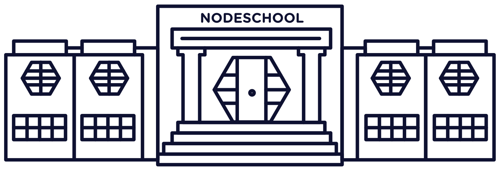

Nodeschool Jakarta
Open source workshops that teach web software skills. Come and meet other developers interested in the JavaScript and it's library in the Greater Jakarta area.
Join School!
Next meetup will be held in:
5th January 2015
at Istana Negara, Jalan Veteran No. 16, Jakarta Pusat
Next meetup speakers are:
- Foo Cat (Object Oriented Food)
- Schrodinger Cat(Salmon's Fish Closure)
- Bar Dog (High Performance Bark)
- Another Cat (Maintaining Kittens Foods)
- Cat with Awesome (Cats Browsing Tools)
- Cat and cat (Kittens Prototype)